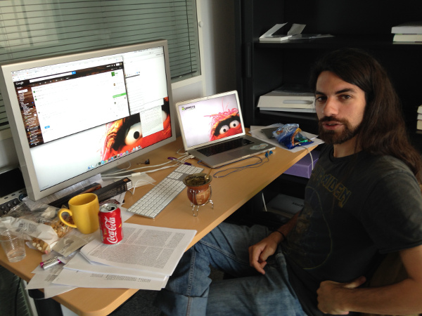
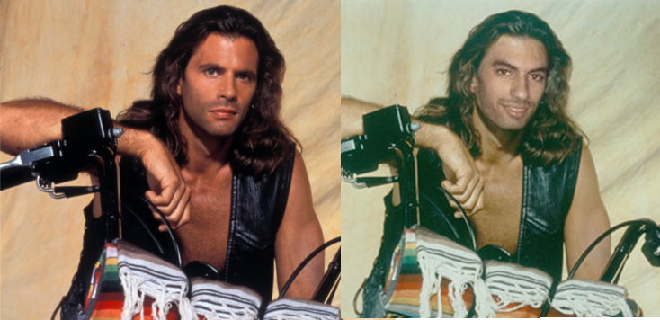
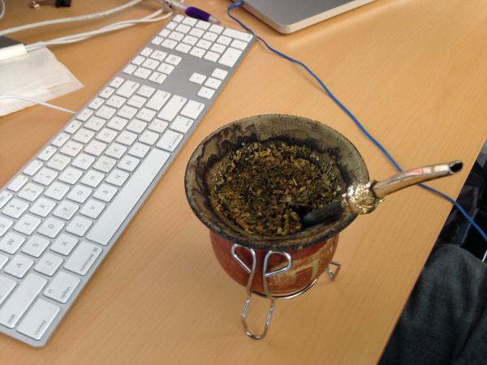

Interview RMoD #5: Guillermo Polito
Interview with Guillermo Polito
This is the fifth post of my series of interviews, in which I interview my colleagues of the RMoD team. After the Interview with Jean-Baptiste Arnaud, I interview Guillermo Polito.
Guille (pronounce it Guiche) is another one of the many argentinians who have been working at Inria. Guille is doing a PhD in RMoD, he drinks mate all day long (which argentinian doesn't?), and he's always in when it comes to going for a beer somewhere in Lille after work.

Figure 1: Guille at his desk
Hi Guille, thanks for taking this interview. Can you tell me a bit about yourself?
Hi Nico, you're welcome.
My name is Guille(rmo) Polito. Please call me Guille :). And pronounce every letter. Specially the 'll' as the english sound for 'sh' or the french 'ch'.
Bref. I come from Buenos Aires, Argentina. 27. I am a systems engineer from there. I worked many years in C#, Java, Android, Python. I used to teach there a bit also. And started doing some open source with Pharo before graduating. Now, I'm doing a PhD at Lille/Douai where I have fun with Pharo, the CAR and RMoD teams. The PhD topic is fuzzy. I don't want to talk about my phd. Arghhh stop it!!!
People tell me I'm not at all polite, despite what my surname is. Bah, maybe that's a bit true. Acid, yeller, hate formalities. Sometimes they call me Lorenzo after Lorenzo Lamas because of the long dark hair I think (they can say better probably). In fact, a picture of him inspired a picture of me.

Figure 2: Guillermo Lamas
Funny fact: when I started my blog I had that picture in the front page. Guess where I had the most clicks on? Certainly not my posts…
Last but not least: Bostero. That is, fan of the best football team in the world, you know? If you don't know Boca Juniors, you know nothing about football.
What are you working on in the RMoD team?
Plenty of stuff! Concretely I'm doing a Phd, i'm in the last year. I would say that my Phd topic is about the manipulation of first class representations of object environments, those that we call object spaces, or Oz :)… And on top of that there are some things going on, in particular the Pharo bootstrap, and Tornado (my secret project that will come to light soon).
Besides my Phd obligations, I also participate in Pharo, as almost everyone in RMoD. Sometimes doing VM stuff, sometimes on the image side… Sometimes when I have time I do things around DBXTalk and Glorp too. But basically I'd say I have fun :).

Figure 3: Guille's Mate
How would you describe RMoD besides work?
I'd describe it as fun. I actually really enjoy coming to the lab, except when Nico is there (joke!).
No, really, you always find somebody open to discuss, to work in pairs, or even to just drink a mate. It's not difficult to find people that would like to share a beer after work. People receive you with jokes or insults, that makes me feel at home :). Really!
Esteban had a question for the next interview: "Would you like another beer?
Actually that's a great question in the context of our team! I think RMoD is located in one of the best places in the world beer-wise speaking :).
So… Bien sûr! Une Kwak stp!
What question would you ask another member of the team?
God, there are so many good ones like…
What question would you ask another member of the team? When is that beer? Emacs or Vim?
But I'd better go for… Do you prepare mate?
Thank you Guille!
If you liked this interview, you might also want to check out the Interview with Jean-Baptiste Arnaud.
comments powered by Disqus